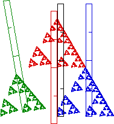

| To determine the r scalings of the pieces, isolate some major
horizontal feature of the whole shape - say the length of the bottom - and measure the
correspondng lengths of the three pieces. |
| With the blue ruler, we see the bottom of the whole fractal has
length 2 inches, say. |
| The red and
blue rulers also show the
red and
blue pieces have
corresponding lengths 1 inch, so they have r = (1 inch)/(2 inches) = 0.5. |
| The green ruler shows the
green piece has bottom length 0.8 inches, so the
green piece has
r = (0.8 inches)/(2 inches) = 0.4. |
 |
 |
|
| If the fractal is self-similar, then the s scaling of each piece equals
the r scaling of that piece. |
| In general, to determine the s scalings of the pieces, isolate some major
vertical feature of the whole shape - say what would be the altitude if the
whole shape were a triangle - and measure the
correspondng lengths of the three pieces. |
| With the black ruler we see the whole fractal has altitude 1.73 inches. |
| The red and
blue rulers show the
red and blue pieces
have altitudes .87 inches, so both have
s = (.87 inches)/(1.73 inches) = 0.5. |
| The green ruler shows the
green piece
has altitude 0.7 inches, so for
this piece
s = (0.7 inches)/(1.73 inches) = 0.4. |